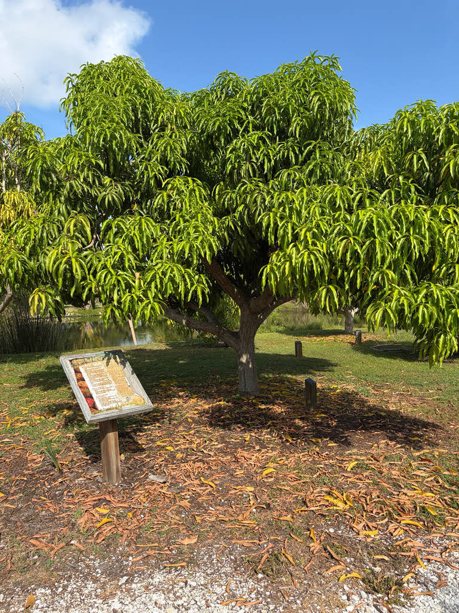

- The most widely consumed fresh fruit in the world by volume — more mangoes are eaten globally each year than apples, bananas, or grapes.
- A member of the cashew family (Anacardiaceae), which means it is related to poison ivy, poison oak, and sumac. The sap and skin contain urushiol-related compounds that cause contact dermatitis in sensitive individuals. The flesh of ripe fruit is safe.
- Trees can live and produce for over 300 years. Old specimens in India and Southeast Asia are still fruiting.
- Over 500 named cultivars exist, varying enormously in size, color, fiber content, and sweetness.
Non-native. Native to South Asia — the Indian subcontinent and Myanmar — where it has been cultivated for over 4,000 years. Now the most widely cultivated fruit tree in the tropics. Member of Anacardiaceae — the cashew family.
- Mango has been in continuous cultivation longer than almost any other fruit tree. Archaeological evidence from the Indian subcontinent documents cultivation beginning around 2000 BCE. Buddhist texts mention it. Alexander the Great encountered mango groves during his Indian campaign.
- Portuguese traders carried it from India to Africa and Brazil in the 16th century; from Brazil it reached the Caribbean and eventually Florida.
- Florida has its own mango culture. The warm south of the state — Miami-Dade County in particular — has been a center of mango variety development for over a century, with collectors and growers developing and naming hundreds of local cultivars. The Rare Fruit Council movement, which includes the donors behind Palma Sola's collection, is part of that tradition.
- The cashew family connection is worth flagging. The sap and fruit skin contain compounds related to urushiol — the same substance responsible for poison ivy reactions. People who are highly sensitive to poison ivy can react to mango sap and skin. The ripe flesh, once peeled, is generally safe for everyone.
- The park's mango collection is maintained by the Manatee Rare Fruit Council and includes eight named cultivars: Bailey's Marvel, Cogshall, Dot, Falan, Ice Cream, Mallika, Rosigold, and Pickering — each selected for specific qualities of flavor, size, season, or local adaptability. The Council's collection at Palma Sola is one of the more comprehensive demonstration plantings on the Gulf Coast.
- Florida has its own elite mango legacy. In the early 1900s, a retired captain named John Haden planted Mulgoba mango seeds in South Florida. One grew into the legendary Haden cultivar — beautiful, rugged, and delicious — which single-handedly triggered the global commercial mango industry and became parent to dozens of modern varieties.
- The Rare Fruit Council tradition at this park carries that lineage forward.
Mango flowers attract bees, flies, and other pollinators — they are small and numerous, and the flowering event produces significant pollinator activity. Birds eat the ripe fruit. Fruit bats are important seed dispersers in the tree's native range.
Fallen mangoes feed ground-foraging birds, raccoons, and other wildlife. A productive tree in a warm Florida garden can drop considerable quantities of fruit.
Tiny, pale yellow-white to pink, in large upright panicles at branch tips. Produced in winter to early spring. Individually insignificant; collectively dramatic when a tree is in full bloom.
Variable by cultivar. Typically ovoid to kidney-shaped, 4 to 12 inches long. Skin green ripening to yellow, orange, or red. Flesh yellow to orange, juicy, sweet to tart. A large flat seed in the center.
Lanceolate, dark glossy green, reddish when new. Dense evergreen canopy.
Gray-brown, furrowed with age. Large specimens develop significant trunk diameter.
The dense dark canopy and the flower panicles in winter are the best seasonal markers. Ripe fruit hanging from branches is unmistakable. New reddish leaf growth at branch tips is visible when trees flush.
The ripe flesh is one of the world's great food fruits, and the flowers and processed seed kernel are edible too.
The skin and sap carry compounds related to urushiol, the poison-ivy irritant — people sensitive to poison ivy may react, so wash your hands after handling unpeeled fruit or cut stems.
For dogs, ripe flesh is fine in moderation, but remove the skin and pit — the pit is a choking hazard and holds trace cyanide — and note the sap can irritate skin.


- © Austin Sibrian (CC-BY-NC), via iNaturalist
- © elurding (CC-BY-NC), via iNaturalist
- © Joanne Walker (CC-BY-NC), via iNaturalist
- © Zailibeth Perez (CC-BY-NC), via iNaturalist
- © Denise Sosa (CC-BY-NC), via iNaturalist
- © Ruby Meador (CC-BY-NC), via iNaturalist